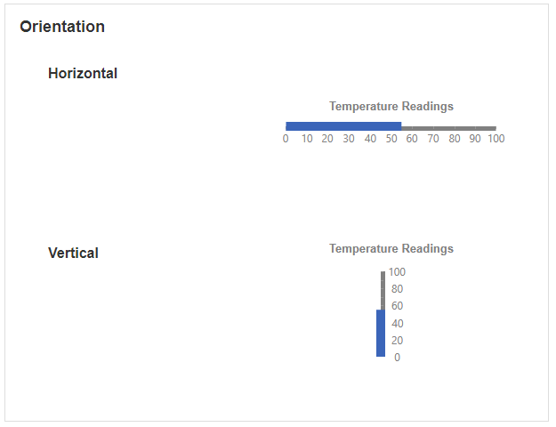
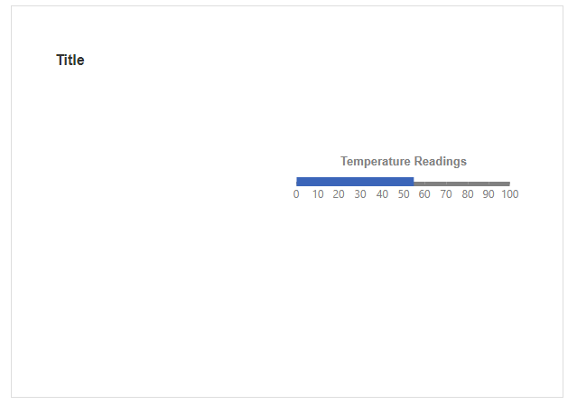
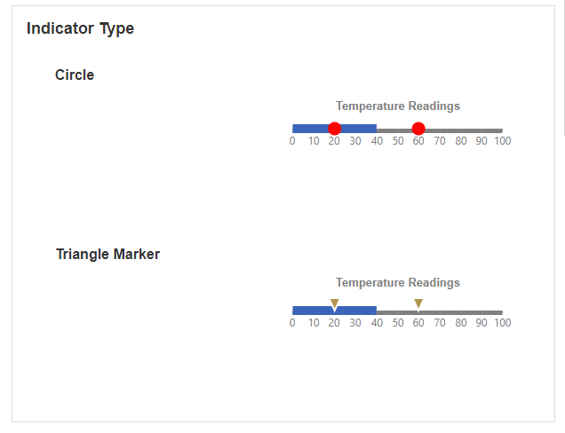
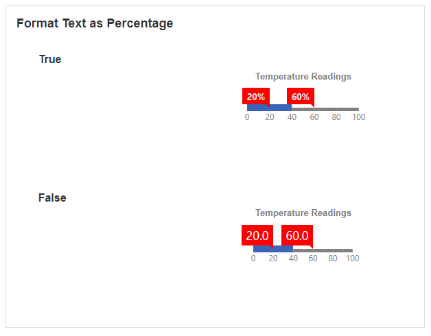
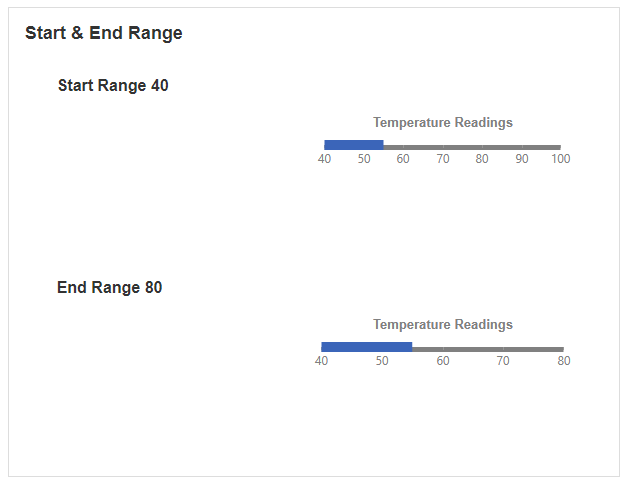
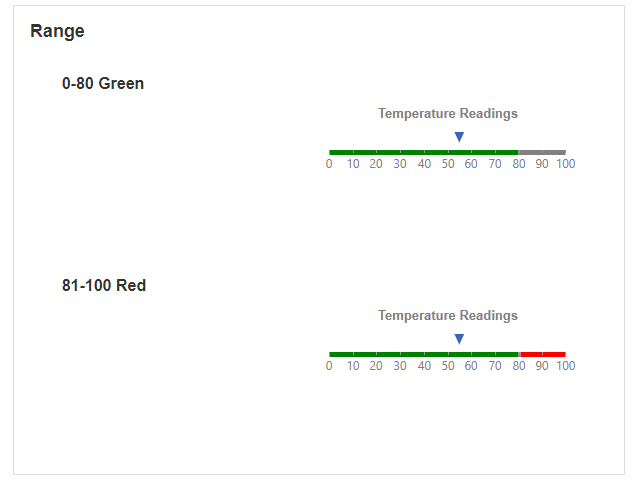

Linear Gauge
This Block allows you to display data in the format of a Linear Gauge. The Linear Gauge is a scale that indicates a single value or multiple values. Linear Gauges are useful for displaying and visualizing numeric values within a certain range.
Linear Gauge Properties
Appearance
Common Properties
The visibility property is common to most Blocks;
See the Common Properties article for more details on common appearance properties.
Options that are specific to Linear Gauges include the ability to change the orientation, title, font color, tick interval, and the style of the primary and sub-values.
Orientation
This determines if the Linear Gauge is displayed horizontally or vertically.

Title
This is the text that shows on top of the Linear Gauge.

Font Color
This changes the color of the text above the Linear Gauge.

Tick Interval
This determines the number interval of the Linear Gauge.
Primary Value Indicator Type
This determines the shape of the marker that points to the value on the gauge. Options include a rectangle, circle, rhombus, range bar, triangle marker, and text cloud.
Primary Value Format Text as Percentage
This is only available if the indicator type is a text cloud. Enabling this will show the text on the screen as a percentage.
Primary Value Indicator Color
This determines the color of the indicator.

Primary Value Indicator Offset
This determines how far away the needle or marker is when pointing to the value.

Sub Value Indicator Type
This determines the style of the sub-values showing on the Linear Gauge. The indicator type refers to the shape of the needle that points to the value on the gauge.

Sub Value Format Text as Percentage
This is only available if the indicator type for the sub-value is a text cloud. Enabling this will show the text on the screen as a percentage.

Sub Value Indicator Color
This determines the color of the sub-values.

Sub Value Indicator Offset
This determines how far away the need or marker is when pointing to the sub-value.
Behavior
Common Properties
The disabled property is common to most Blocks;
See the Common Properties article for more details on common behavior properties.
Start Range and End Range
The start and end range define the boundaries of where the values of the Linear Gauge should start and end.

Range
The range allows you to change the color of different ranges on the gauge.

Value
You can show a single value on the Linear Gauge, as well as multiple sub-values.
Last modified: May 25, 2025